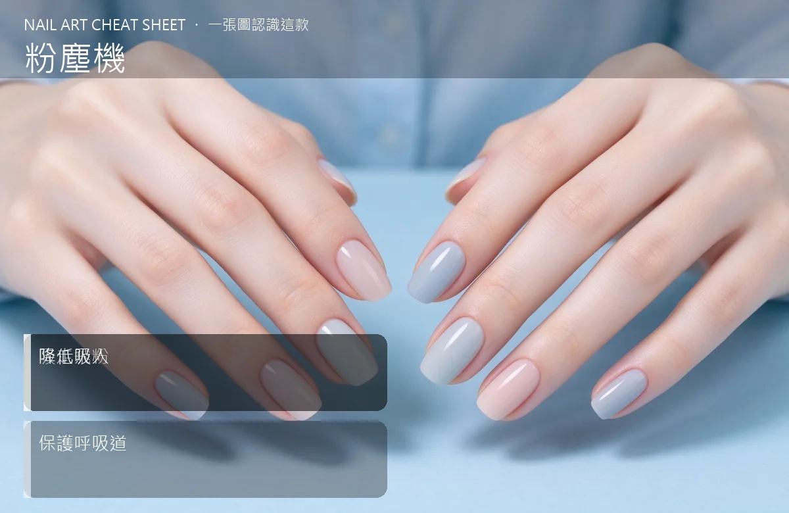

美甲粉塵機是什麼？中階入門攻略
粉塵機是吸打磨時的飛粉，保護自己呼吸道，開店一定要有，在家練也建議。
粉塵機原理與辨識重點：美甲師不說的吸走飛粉
打磨甲面、卸甲時會產生細小粉塵，吸入久了會傷呼吸道。粉塵機（吸塵器）放在客人手下方，邊磨邊吸，把粉直接吸走。它有風扇＋濾網，有的還附集塵袋。
誰適合做粉塵機？健康必備對號入座
會用電動打磨機、常做卸甲的美甲師必備；在家自己磨指甲的人也建議買一台小型的。
粉塵機美甲施作步驟：粉塵收集器
放在工作檯上客人手下方 → 開啟風扇調到合適吸力 → 打磨時把粉對準吸口 → 定期清濾網或換集塵袋 → 用完擦乾淨防異味。
粉塵機優缺點分析：美甲持久度與傷甲評估
| 優點 | 說明 |
|---|---|
| 大幅降低粉塵飛散，保護自己和客人呼吸道，工作區也乾淨。 | 是通用流派的招牌，中階就能上手 |
| 缺點 | 說明 |
| 要插電、有噪音，便宜款吸力不夠等於沒用；濾網要定期更換。 | 前置與別貪便宜買不到 1000 元的小吸塵，吸力弱、風扇小，吸不了多少粉。至少挑 2000 元以上、有 HEPA 濾網的。沒顧好會打折 |

粉塵機新手雷區：降低吸入與常見錯誤
注意：別貪便宜買不到 1000 元的小吸塵，吸力弱、風扇小，吸不了多少粉。至少挑 2000 元以上、有 HEPA 濾網的。
粉塵機和其他美甲做法的差別比較
粉塵機跟「美甲抽風機」是類似產品，差別在粉塵機是桌上型小型吸塵，抽風機是整間店的通風系統。兩者不衝突，店裡建議都要有。
粉塵機美甲常見問題 FAQ
Q：一定要買嗎？ A：你自己一人做、不常卸甲可以先緩。但只要開始天天用電磨，一定要買，不然久了鼻子和喉嚨會出問題。
Q：價位帶怎麼挑？ A：桌上型 2000–5000 元算合理，專業款 8000–15000 元。新手 2000–3000 元入門款就夠。